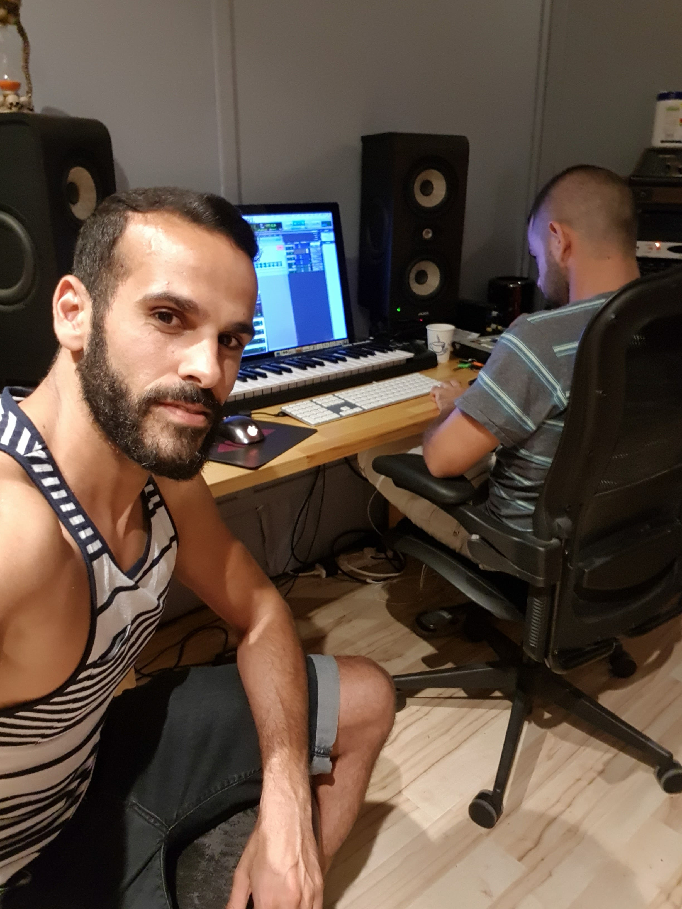

ABOUT ME
I born 18 April 1984 in the city of Rishon Le-Zion and grew up in the center region of Israel.
After years of writing "in a drawer" of many songs in Hebrew and English,
I decided few years ago to work on a number of songs with a variety
of composers and fulfill my dream ...
to hear my songs played in clubs in Israel and around the world .